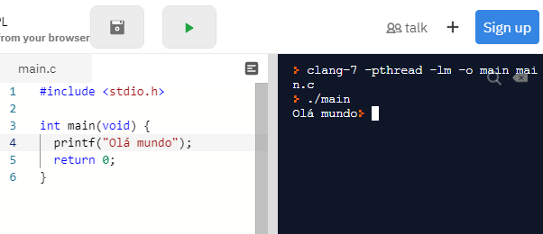

C
A linguagem de programação C é uma linguagem compilada de alto nível, com ela é possível desenvolver algoritmos complexos. Nesse tutorial usaremos a plataforma online Repl.it - clique aqui, pois não será preciso baixar nada.
Vamos começar com o Hello world, que significa Olá mundo. Primeiro, devemos adicionar uma biblioteca no nosso código:
Feito isso, devemos começar escrevendo int main(void){ } que significa que nossa função não terá parâmetros, ou seja, não retornará nada. Dentro das chaves digitamos printf(" ") esse comando é utilizado para mostrar algo na tela para o usuário, dentro das aspas escreveremos Olá mundo e para finalizar o comando devemos colocar ponto e virgula ( ; ), saltando uma linha, colocamos o comando return 0; que confirma que não retornaremos nenhum valor.
Veja como ficará o código:
Para mais conteúdo no site comente nos comentarios da página sobre.